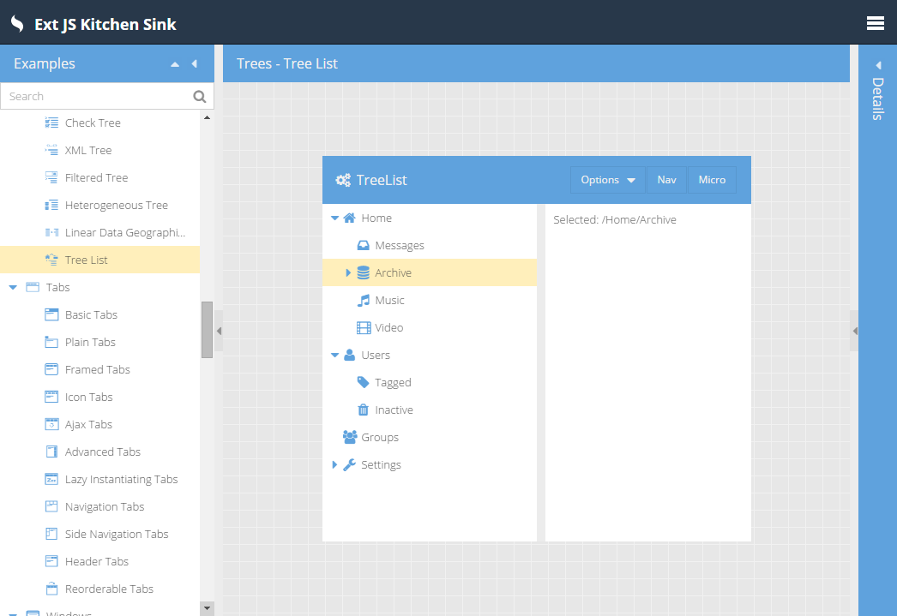
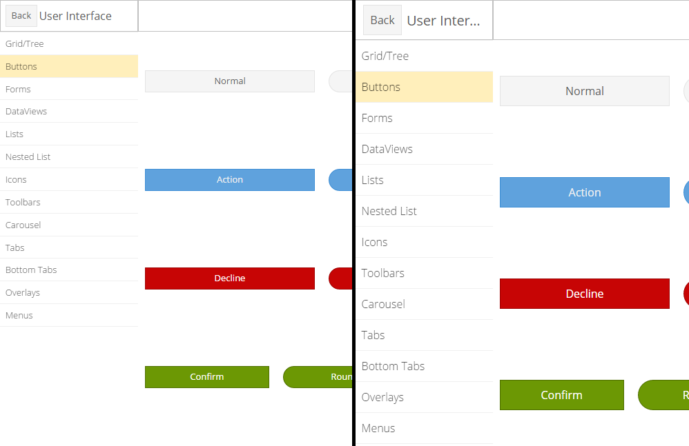
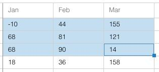
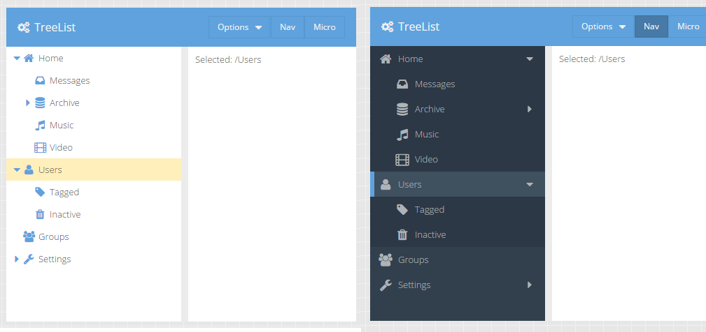
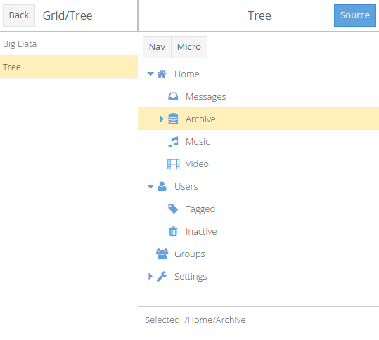
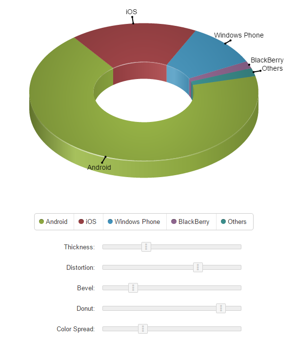
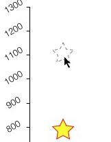
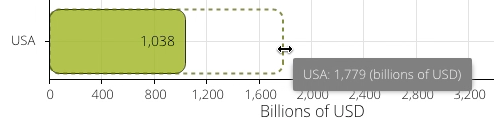
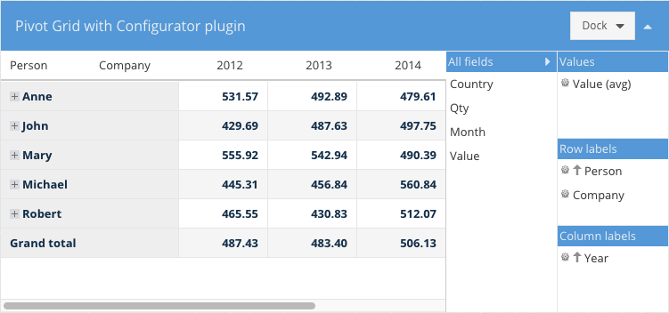
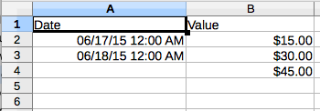

介绍
跟随Ext JS 6，Sencha介绍了一个单独的框架来创建跨越所有类型的设备上，从手机到平板电脑到桌面运行的应用程序。您将可以写更少的代码，以产生最佳的用户体验。与一个引人注目的新的主题相结合，ExtJS 6 有你需要的在任何设备上创造的不可意思的经验。
合并 Ext JS 和 Sencha Touch
合并 Ext JS 的和 Sencha Touch 的过程中已经走过了很长的走。在 Ext JS 5, Sencha 不甘心其框架（Ext.data，Ext.app等等）的核心进入“core”包。视觉层仍然是适当的“ext”包的 Ext JS 的一部分。合并 Sencha Touch 可视化组件的最后步骤需要整合框架的这些不同的方面。 区分彼此组件家庭 EXT JS 6 中，我们使用术语 “toolkit”.
Toolkits
一个 “toolkit” 是只包含框架的视觉元素的包。这些包括像panels, buttons, grids 和其他等。在 Ext JS 6 中有两个工具包：classic and modern.
Ext JS的视觉元素包含在Ext JS 6的 classic 工具包中, 而Sencha Touch的视觉元素包含在 modern 的工具包。
应用程序可以简单地选择自己的工具包和它添加到自己的 "app.json":
"toolkit": "classic", // or "modern"通用核心(Common Core)
下面的工具包是常见的“核心”包。核心包提供的东西像数据 (Ext.data) （Ext.data）和应用程序架构 (Ext.app) 一个共同的API。 基于共同的核心，应用程序可以用于管理数据以及的 ViewModels 或控制逻辑用于与后端连通共享代码。
来自于 Sencha Touch
如果从 Sencha Touch 升级，你会立即从用modern工具包和common core 访问 ViewModels 和 ViewControllers 中受益。你也可以使用在 Ext JS 5中介绍过的多设备事件系统，因此鼠标事件将无缝地转换为事件侦听器像 touchstart 无需检测设备的能力。
通用的应用程序和智能手机
使用 Ext JS 6 and Sencha Cmd 6，然而， 您可以创建一个可以使用这两种工具包Universal Applications。通过这种方式，你可以创建一个针对像智能手机或运行IE8或者二者之间的任何设备或浏览器企业桌面移动设备的单一应用。
你可以指出哪些工具包使用它通过在 Sencha Cmd 的产生"app.json"，相反，省略了一个工具包主要议题包括：修改后的builds块。
"builds": {
"classic": {
"toolkit": "classic",
"theme": "theme-triton"
},
"modern": {
"toolkit": "modern",
"theme": "theme-triton"
}
}正如你所看到的，我们正在指定“theme-triton” 为classic与modern的工具包，但你可以调整你认为合适的任何方式的主题。
如果你有以上的在你的"app.json" builds块“sencha app build”将建立两个指定构建成独特的文件夹中。您也可以单独通过目标构建键名称建成。 例如：
sencha app 打造 modern我们的 Sencha Cmd 生成启动的应用程序提供了一个工作沙箱作为您的应用程序的切入点。甚至更好，看看我们已经创建了新的管理员仪表盘应用程序模板（见下文）。
欲了解更多编译优化信息，请看 多屏幕开发 和 Environments 向导
Triton Theme
这个发布版本的中心是叫名为 Triton 的最新主题。Triton 是一个平面，简约的主题，把重点放在你的内容，而不是像圆角和渐变装饰。 Triton 主题是第一个 Ext JS 主题，为“字型图标”(“font icons”)提供全面的支持。许多在 Triton 使用的图标来自 Awesome 字体一些有用的补充，完成合并。使用的 Triton，应用程序可以容易地控制这些可伸缩，矢量图像的大小和颜色。
对于字体图标支持包括诸如面板工具，树图标，表单字段触发器，按钮箭，复选框，单选按钮，网格操作图标，网格列和过滤菜单，滑动拇指，框和边框分离器，工具栏溢出指标...更多。几乎所有的视觉元素可以使用的字体图标。

Touch Sizing
Triton 主题在桌面电脑和平板电脑尺寸之间取得平衡。 对于 classic 工具包，这个大小的方法是比较简单，由 Neptune 和 Crisp 采取的做法，每个提供了一个“触摸大小的”派生出来的主题管理。
对于 modern 工具包, 然而，由于使用 CSS 布局，我们能够让更多的大小灵活地控制。在智能手机上，html 元素自动获得一个 x-big 类，这将扩大很多项目（如按钮），给他们更大的目标区域。

左侧 KitchenSink 按钮更适合台式机，而那些在右边会在手机上更舒适。您可以通过简单地添加或删除 x-big 更改 html 元素的默认大小，当你启动应用程序的时候。
Fashion
Fashion 是 Sencha 构建基于 "*.scss" 文件的主题的新编译器。 Fashion 是有一些有用的扩展支持工具中的类似 Sass 语言。 Fashion 是用JavaScript实现，并在浏览器中运行，当与 PhantomJS 相结合，Sencha Cmd 可以建立以及对应用程序在 app watch 上使用Fashion的主题。
这意味着没有更多的Ruby系统的需求！因为 Fashion 在浏览器中运行，我们将不再需要建样式规则两次（一次为限幅器，并再次与最低要求的内容）。更重要的是，我们可以重建 app watch，这是开发过程中真正受益的。
但是，更重要的好处在 app watch 中使用Fashion - 实时更新！您可以打开一个应用程序使用（modern）的浏览器，加载 .scss 文件，而不是生成CSS。那么 Fashion 能反馈到文件更改并更新CSS无需重新加载页面。
Promises Support
Ext JS 6 包括一个基于标准的实现的承诺符合 Promises/A spec和测试套件。对 DeftJS 小组 一个大大的“感谢”,是提交各自的领域中通过了测试！
Promises in Ext.Ajax
在以后的版本中，我们将纳入承诺在框架的更多领域的支持，但是对于 Ext JS 6 我们开始于 Ext.Ajax.request()。此方法历史上返回的对象来跟踪正在进行的请求。现在对象的一个类的实例派生自 Ext.data.request.Base 因为 then-able (在 promises 术语中)。这样，我们保留 Ext.Ajax.request()（目前的API）以及允许你写这样的代码：
Ext.Ajax.request({
url: 'some/url',
}).then(function (response) {
// use response
});Creating Promises
Promises 可以通过以下两种方式之一创建：new Ext.Promise()，根据 ECMAScript 6 标准 Promise 类，和 new Ext.Deferred() 有些增强的用途。
使用 Ext.Promise 是一样的使用新的 Promise 的构造函数：
function getAjax (url) {
// The function passed to Ext.Promise() is called immediately to start
// the asynchronous action.
//
return new Ext.Promise(function (resolve, reject) {
Ext.Ajax({
url: url,
success: function (response) {
// Use the provided "resolve" method to deliver the result.
//
resolve(response);
},
failure: function (response) {
// Use the provided "reject" method to deliver the error
//
reject(response);
}
});
});
}当然，现在 Ext.Ajax.request() 支持的 promises 这里没必要做这个，但它说明了一个异步动作如何转换为使用 Ext.Promise。
浏览器原生支持 Promise， the Ext.Promise 引用将被指派给 Promise 因此只包括 promise 原生的特性。
使用 new Ext.Deferred() 方法等效如下：
function getAjax (url) {
var deferred = new Ext.Deferred();
Ext.Ajax({
url: url,
success: function (response) {
// Use the provided "resolve" method to deliver the result.
//
deferred.resolve(response);
},
failure: function (response) {
// Use the provided "reject" method to deliver the error
//
deferred.reject(response);
}
});
return deferred.promise;
} Ext.Promise 和 Ext.Deferred 之间的关键区别在于 creator 有直接访问 “behind-the-scenes” 管理用户promise对象，那就是 Ext.Deferred 的实例。使用这个对象，异步操作的提供者可以使用超出目前promises的标准附加功能（如进度更新）。 另外, Ext.Deferred 返回的promise实例具有与 Ext.Deferred 提供的额外的方法。
Classic Grid
Spreadsheet
在 ExtJS 5.1引入的新的spreadsheet模型现在有几个很酷的新功能。这个选择可以设置成可扩展的（通过设置extensible:true）。这加在了“drag-corner”或选择的右下角的小方块。这允许当前选择纵向或横向扩展。

这种常常和对于那些将使用当前选择的值复制到扩展区域的插件合并 (又像一个spreadsheet)。
Actionable Mode (无障碍)
网格还支持ARIA的“可操作的模式” - 我们传统的单元格编辑模式的扩展。这允许只通过键盘来聚焦并激活各种表格内容。这是可访问的一大步，但也使得开心键盘的用户，因为他们可以在双手不离开键盘和网格任何互动。
使用F2键进入可操作模式。 回车键可以启动单元格编辑，现在是可操作模式的例子。
Locking grids
在锁定网格内导航，现在跨边界锁定导航。这是既“navigable模式”（默认的单元格导航模式）和““actionable模式”，当单元格的内容都可以访问和使用TAB键访问。
Modern Grid
在modern工具包网格组件具有许多新的令人振奋的发展也是如此。在 modern 工具包中，许多网格功能集的其实是 Ext.dataview.List（基类）的一部分。网格是使用 Ext.grid.Row在其存储中每个项目的组件列表。
不像Sencha Touch Grid，然而，在EXT JS 6中，Row组件现在是cell部件的轻量级容器。事实上，cells在Ext.grid.cell命名空间的类的实例。这些小部件用的ViewModels使得它易于管理cells和configs来使用数据绑定，像这样：
{
xtype: 'grid',
// Configure the Row (the List item):
//
itemConfig: {
// viewModel: true, // a default viewmodel
// or:
//
viewModel: {
type: 'mygrid-row' // enable formulas etc.
}
},
columns: [{
text: 'Age',
// ...
cell: {
bind: {
cls: '{record.cls}'
}
}
}]
}在Row组件确保了record属性被发布到其ViewModel（如果它已经配置了一个）。该行中所有 Cells 都隐式地连接到Row的ViewModel，当然通过Grid继承自更高级别的。
这个“infinite” 列表 (缓冲的渲染器) 只会创建一把 Row 组件,将通过重新配置自己的record 所需的记录来回收他们。这自然更新了的子Cells中绑定的configs。
最后，使用 widgetcell (Ext.grid.cell.Widget)我们可以把组件放到网格的cell中。而且，当然，他们可以另外利用数据绑定。
{
xtype: 'grid',
//...
columns: [{
text: 'Verify',
// ...
cell: {
xtype: 'widgetcell',
widget: {
xtype: 'button',
ui: 'action',
bind: 'Verify {record.firstName}',
handler: 'onVerifyUser' // route to ViewController
}
}
}]
}在行为中来看 modern grid ， 检查 KitchenSink.
The Treelist Widget
Admin Dashboard应用程序模板不仅展示我们新的Triton主题，也是越来越多的Widget家族的最新成员：treelist。作为一个 Widget, treelist 在这两个 modern 和 classic 工具包中都可用。

超出在导航区域使用时， treelist 可以用于类似tree组件。有几个关键的不同：
- Treelist 提供了一个用户混合界面（它产生上面的导航视图）。
- Treelist 有一个“micro”模式，其中只有顶级节点的图标是可见的。子节点显示在一个浮动的元素上（如上所见）。
- Treelist 呈现在其
TreeStore（它不支持缓冲渲染）的所有节点。节点可以，当然，被异步获取。 - Treelist 节点本身呈现为Widgets。
- Treelist 支持选择和悬停 “indicator”（选定节点上的垂直蓝色条纹）。
- Treelist 仅支持单选择。
- Treelist 不支持附加列。
- Treelist 不支持 grid 插件。
这使得适合于不含有太多节点trees的treelist。对于大型数据集，标准 tree 组件仍然应该是首选。
KitchenSink 例子中，您可以用一些邻近备用设备的treelist中的configs玩。

正如你可以在这里看到，该ui界面配置可以动态地设置并且树将相应更新。
在 modern KitchenSink sink 例子中，treelist 看起来几乎相同：

Responsive Column Layout(响应列布局)
Admin Dashboard 还为我们最新布局采用了 classic 工具包：responsivecolumn。用于应用程序的一个共同的设计目标是在一个网格状的形式呈现内容与基于可用空间列的数目可变。随着IE8的缺乏CSS@media支持，实现这个目标是一个挑战。 这是responsivecolumn用武之地。
创建使用responsivecolumn的容器，并说明要处理的布局状态。
{
xtype: 'container',
layout: {
type: 'responsivecolumn',
states: {
small: 800,
large: 0
}
},
items: [{
xtype: 'panel',
responsiveCls: 'large-50 small-100'
},{
xtype: 'panel',
responsiveCls: 'large-50 small-100'
}]
}然后，我们添加CSS规则来匹配这些类：
.large-100 {
@include responsivecolumn-item(100%);
}
.large-50 {
@include responsivecolumn-item(50%);
}
.x-responsivecolumn-small {
> .small-100 {
@include responsivecolumn-item(100%);
}
}其结果是，每个面板占用的宽度的50%时，该viewport是“大”（超过800像素）和宽度的100%时，该视口是“小”（小于800像素）。
在 responsivecolumn 布局将添加一个CSS类基于容器上哪个状态和当前viewport的大小相匹配。这些动态维护类允许所有的浏览器应用适当的样式，而无需 @media。responsivecolumn 布局在 “ux” 包中能找到。
Theming In The Modern Toolkit(主题化的现代工具包)
随着 modern 工具包推出的Triton，我们都给予了很多关注题材的创作。我们组织了主题放进包中，以使主题可以派生。事实上，Triton主题扩展自Neptune主题，现在也在modern工具包。我们再访问“UI”配置的概念，优化它是如何处理的。由于现代的浏览器不需要像框架复杂的解决方案，ui混合可制成显著简单，因此更加灵活高效。
我们开始按钮和创建的新的混合button-ui 。该混合需要许多可选的参数（目前为45!），你可以用它来调整Ext.Button 组件的几乎所有可视化方面。从 classic 混合的主要区别是，该混合只会产生以实现给定的调整所需要的一些additional样式规则。
要看到这是如何工作的，考虑一下使用button-ui：
{
xtype: 'button',
ui: 'rounded'
}
//...
@include button-ui(
$ui: 'rounded',
$border-radius: 8px,
$border-radius-big: 12px // size when x-big is present
);整个生成CSS会是这个样子：
.x-button-rounded {
border-radius: 8px;
}
.x-big .x-button-round {
border-radius: 12px;
}这意味着，该 button 元件将得到最从 x-button CSS类其造型和将获得上述的样式为好。你甚至可以使用多个名称中的 ui 配置组合成多种调整：
{
xtype: 'button',
ui: 'rounded red'
}
//...
@include button-ui(
$ui: 'red',
$background-color: red
);使按钮变成红色需要微小的额外CSS将应用 x-button-red除了从x-button-rounded使圆角边框半径。
我们很高兴我们已经从这种方法看到并相信这将有助于实现应用自己的审美目标，同时在同一时间面向未来通过保持细节混入API背后他们的代码。寻找在将来的版本中这个模式的更多的UI混入其他组件。
Charts(图表)
Pie 3D
图表中的包的最大的新功能是对3D饼图系列（'pie3d'）的改善。它现在支持标签，联想，突出显示，工具提示，斜面和改善了阴影与3D效果配置水平。

在新的Charts KitchenSink中的各种滑块允许你玩和看看每个他们是如何改变图表的外观。
Plugins
这个新的 itemedit 插件允许用户拖拽 ‘bar’ 系列项和标记 ‘scatter’ 系列并修改下面的数据。


Events(事件)
声明渲染器（由ViewController命名方法执行）现在支持轴标签以及标签系列，项目和工具提示。
Ext JS Premium
Ext JS Premium 有两个额外的代码包：exporter和pivot。这些软件包提供Excel数据导出和透视网格来帮助用户显示和分析数据。
Pivot Grid
这个pivot grid 组件现在 pivot 包中提供并且在 Ext.pivot 名字空间中存在。该主要增强 pivot grid 在Configurator插件中能够看到。
Enhanced Configurator(增强型配置)

这个配置接口得到了改进，现在可以停靠在任何一方，包括在右（或左），如上图所示。您还可以配置configurator panel是否可折叠。
Exporter Plugin(导出器插件)
这个 pivotexporter 插件代替原来的 Excel 导出插件。这其中使用了更通用的方法，并允许您导出pivot grid 数据为任何在类系统中的 Exporter 变量。
这个 pivot 包需要 exporter 包，所以你需要同时在你的“packages”文件夹中。
例子：
{
xtype: 'pivotgrid',
plugins: [{
ptype: 'pivotexporter'
}]
}
// Somewhere on a button you may have something like this
//
grid.saveDocumentAs({
type: 'excel', // exporter alias
title: 'Excel export',
onlyExpandedNodes: false,
showSummary: true,
fileName: 'export.xml'
});
// saveDocumentAs will try to save the file in the browser. If your browser is not
// supported then do this
//
var xml = grid.getDocumentData({
type: 'excel', // exporter alias
title: 'Excel export',
onlyExpandedNodes: false,
showSummary: true
});
// and probably send the xml content to the serverLabel filter operators(标签过滤器运算符)
有两种新的Label过滤器运算符：in and not in.
leftAxis: [{
header: 'Country',
dataIndex: 'country',
filter: {
type: 'label',
operator: 'in',
value: [ 'USA', 'Canada', 'Australia' ]
}
}]Exporter
在exporter包中，你可以用它来创建Excel文档以及网格插件，您可以添加到您的grid中，添加Excel导出功能类。
Exporter plugin(导出插件)
这个插件支持grid数据导出到Excel。它可以保存文件浏览器是否支持它或产生用于进一步处理的内容。Grid列不应出口需要有自己的 ignoreExport 配置集。
这个插件 exporter 包，这意味着它应该被添加到应用程序包的文件夹，并且是 app.json 所需的一部分。
Example:
{
xtype: 'grid',
plugins: [{
ptype: 'gridexporter'
}]
}
// Somewhere on a button you may have something like this
//
grid.saveDocumentAs({
type: 'excel', // exporter alias
title: 'Excel export',
fileName: 'export.xml'
});
// saveDocumentAs will try to save the file in the browser. If your browser
// is not supported then do this
//
var xml = grid.getDocumentData({
type: 'excel', // exporter alias
title: 'Excel export'
});
// and probably send the xml content to the serverContent

Generate Excel XML documents(生成EXCEL XML文档)
这个 exporter 包中包含的类，使您可以生成你需要的任何数据的Excel XML文档。
下面是如何实现这一目标的基本示例：
var workbook = Ext.create('Ext.exporter.file.excel.Workbook', {
title: 'My document',
author: 'John Doe'
});
var table = workbook.addWorksheet({
name: 'Sheet 1'
}).addTable();
// Add formatting to the first two columns of the spreadsheet
//
table.addColumn({
width: 120,
styleId: workbook.addStyle({
format: 'Long Time'
}).getId()
});
// ... etc ...
// Add a formula on the 4th row which sums up the previous 2 rows
table.addRow().addCell({
index: 2,
formula: '=SUM(R[-2]C:R[-1]C)'
});
// Save the document in the browser
//
Ext.exporter.File.saveAs(workbook.render(), 'document.xml', 'UTF-8');上述文件将是这个样子：

自定义 Exporters
Excel的Exporter自带的 exporter，它由两个grid和pivot grid插件生成Excel文档。您可以通过从 Ext.exporter.Base 扩展编写自己的定制exporter类和直接使用您的自定义格式的插件。
Ext.define('My.custom.Exporter', {
extend: 'Ext.exporter.Base',
alias: 'exporter.custom',
...
});
grid.saveDocumentAs({
type: 'custom',
title: 'Custom export',
fileName: 'custom-format.xml'
});更多的惊喜
在未来的版本中，我们将添加额外的软件包来Ext JS Premium，以及不断提升的Ext JS基础。
Screen Reader Support (无障碍)
我们已经直接集成ARIA功能到组件的生命周期。这意味着你将不再需要特殊的“aria”包得到正确ARIA的行为。应用程序现在无需额外的努力将支持屏幕阅读器（如JAWS）。
Microloader
Sencha Cmd 6 现在包括localStorage缓存资源。这类似于 Sencha Touch的产品microloader，但有一些重要的改进。
- 缓存可以在app.json被禁用
- 只有一个应用程序的当前版本将被保存在本地存储
- 只有microloader的内容都不会被microloader删除
浏览器支持
Modern 工具包
桌面电脑
- IE11+
- Firefox and Firefox ESR (Latest 2 Versions)
- Chrome (Latest 2 Versions)
- Safari 7+
手机
- IE11+
- Safari 7+
- Android 4.0+ Chrome
- Android 4.4+ Native
Classic Toolkit
桌面电脑
- IE8+ (Strict DOCTYPE)
- Firefox and Firefox ESR (Latest 2 Versions)
- Chrome (Latest 2 Versions)
- Safari 7+
- Opera (Latest 2 Versions)
平板电脑
- Safari 7+ (iPad)
- Android 4.0+ Chrome
- Android 4.4+ Native
- Windows 8 Touch Screen - IE10+